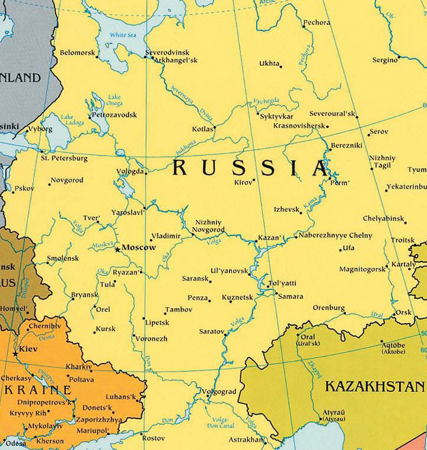
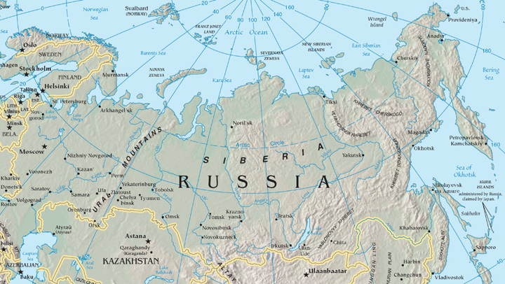
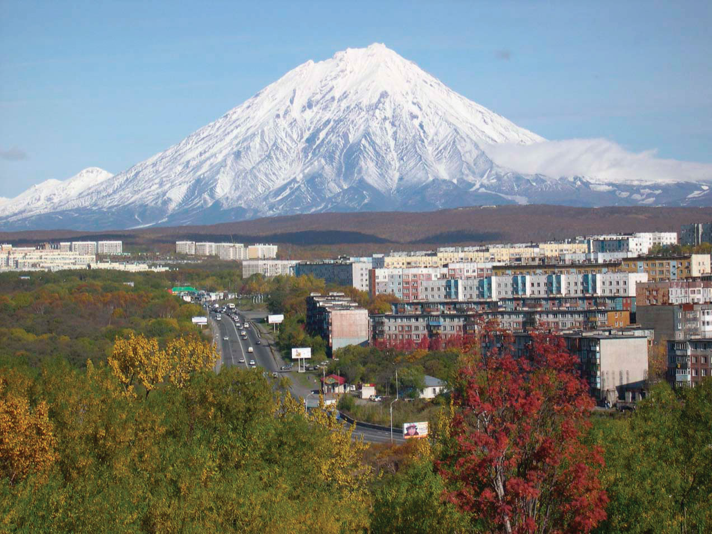
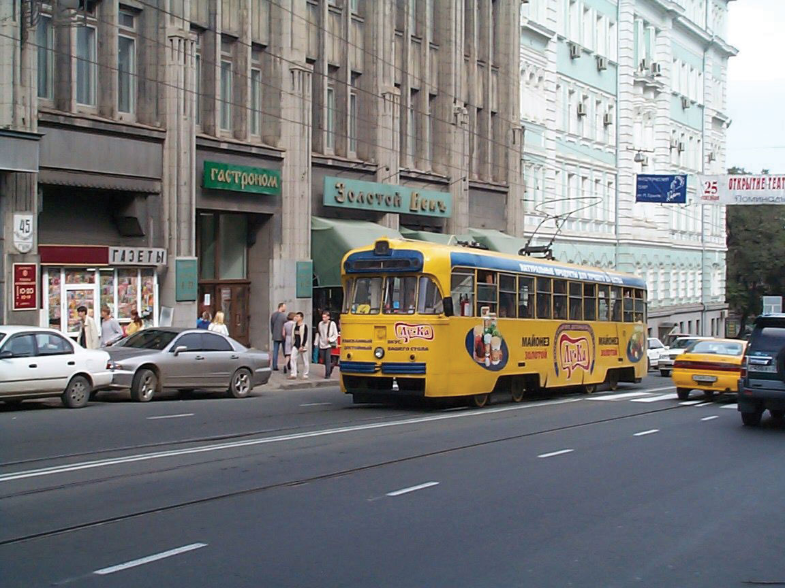
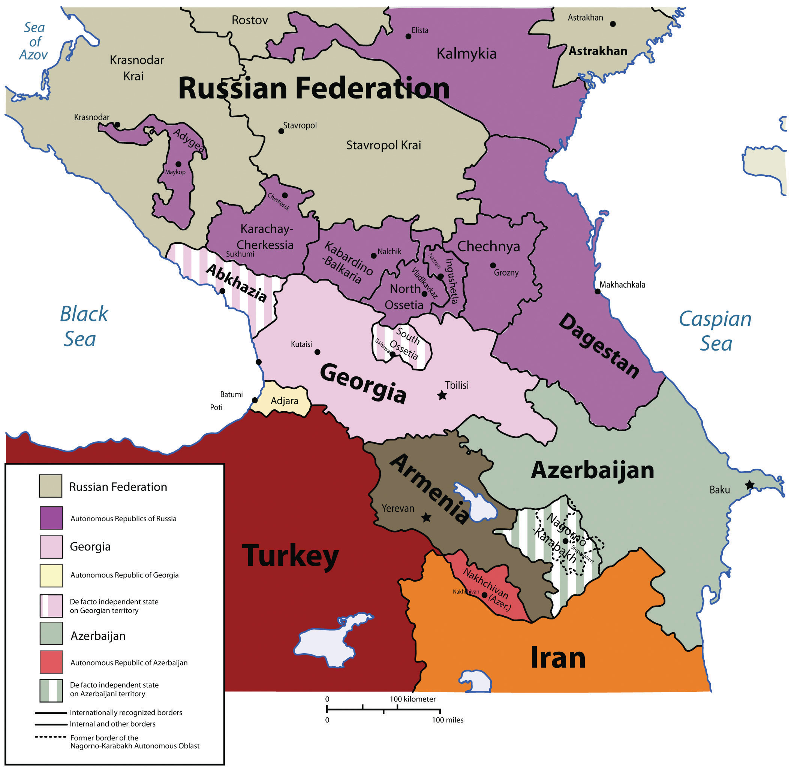
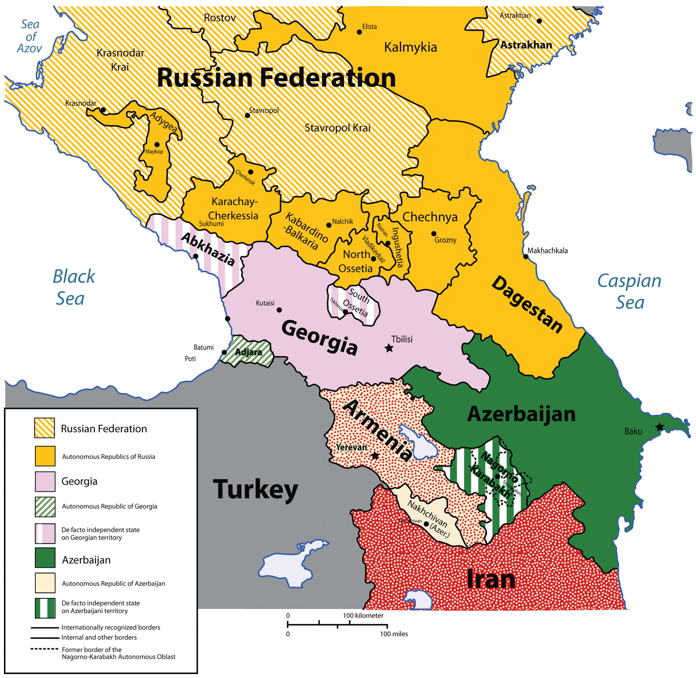
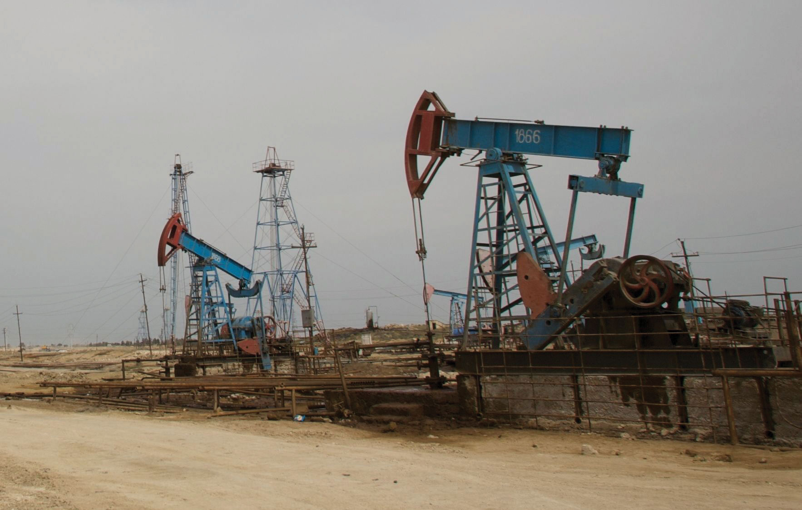

Most of Russia’s population and its major industries are located west of the Ural Mountains on the Russian Plain. Known as Russia’s geographic core, this includes the Moscow region, the Volga region, and the Ural Mountain region. Moscow, Russia’s capital city, anchors a central industrial area that is home to more than fifty million people. Moscow alone has more than ten million residents, with about thirteen million in its metropolitan area, making it slightly smaller than the Los Angeles, California, metro area. A ring of industrial cities surrounding Moscow contains vital production centers of Russian manufacturing. During the Communist era, Moscow expanded from its nineteenth-century core (although the city dates from at least the twelfth century) and became an industrial city with planned neighborhoods. This world-class city has an extensive subway and freeway system that is expanding to meet current growth demands. Although rents, commodities, and domestic goods had fixed prices during the Communist era, the Soviet Union’s collapse changed all that. Today Moscow is one of the most expensive places to live in the world, with prices based on supply and demand. Many want to live in Moscow, but it is financially out of reach for many Russians.
Russia’s second-largest city, with a population of about five million, is St. Petersburg. Located on the Baltic Sea, it is western Russia’s leading port city. The city was renamed Petrograd (1914–24) and Leningrad (1924–91) but today is often called Petersburg, or just “Peter” for short. Peter the Great built the city with the help of European architects in the early eighteenth century to rival other European capitals, and he made it the capital of the Russian Empire. Named after St. Peter in the Bible (not Peter the Great), it is a cultural center for Russia and a major tourist destination. It is also known for shipbuilding, oil and gas trade, manufacturing, and finance. Its greatest tragedy took place when it was under siege for twenty-nine months by the German military during World War II. About one million civilians died of starvation or during the bombardment, and hundreds of thousands fled the city, leaving the city nearly empty by the end of the siege.
Figure 3.12 Russia’s Core Region
Source: Map courtesy of the CIA World Factbook.
To the far north of St. Petersburg on the Barents Sea are the cities of Murmansk and Arkhangelsk. Murmansk is a major military port for Russia’s navy and nuclear submarine fleet. Relatively warm water from the North Atlantic drift circles around Norway to keep this northern port city fairly free of ice. Arkhangelsk (which literally means “archangel”), used as a port for lumber exports, has a much shorter ice-free season than Murmansk. Both of these cities are in Russia’s far north, with long winters and exceedingly brief summers.
The Volga River flows through the core region of Russia, providing transportation, fresh water, and fishing. The Volga is the longest river in Europe at 2,293 miles, and it drains most of Russia’s western core region. This river has been a vital link in the transportation system of Russia for centuries and connects major industrial centers from the Moscow region to the south through an extensive network of canals and other waterways. The Volga River flows into the Caspian Sea, and a canal links the Volga with the Black Sea through a connecting canal via the Don River.
At the eastern edge of Russia’s European core lie the Ural Mountains, which act as a natural divide between Europe and Asia. These low-lying mountains have an abundance of minerals and fossil fuels, which make the Ural Mountains ideal for industrial development. The natural resources of the Urals and the surrounding area provide raw materials for manufacturing and export. The eastern location kept these resources out of the hands of the Nazis during World War II, and the resources themselves helped in the war effort. Oil and natural gas exploration and development have been extensive across Russia’s core region and have greatly increased Russia’s export profits.
Figure 3.13 Russia’s Eastern Frontier, the Far East, and Siberia
Source: Map courtesy of the CIA World Factbook.
East of the Urals, in south-central Russia, is Russia’s Eastern Frontier, a region of planned cities, industrial plants, and raw-material processing centers. The population is centered in two zones here: the Kuznetsk Basin (or Kuzbas, for short) and the Lake Baikal region.
The Kuzbas is a region of coal, iron ore, and bauxite mining; timber processing; and steel and aluminum production industries. Central industrial cities were created across the Eastern Frontier to take advantage of these resource opportunities. The most important of these is Novosibirsk, the third-largest city in Russia after Moscow and St. Petersburg and home to about 1.4 million people. The city is not only noted for its industries but it is also the region’s center for the arts, music, and theater. It is host to a music conservatory and a philharmonic orchestra, a division of the Russian Academy of Sciences, and three major universities.
Agriculture, timber, and mining are the main economic activities in the eastern Lake Baikal region, which is more sparsely settled than the Kuzbas. Lake Baikal (400 miles long, 50 miles wide) holds more fresh water than all the US Great Lakes together and about 20 percent of all the liquid fresh water on the earth’s surface. Its depth has been recently measured at 5,370 feet (more than a mile). Some of the longest river systems in the world flow through the Eastern Frontier. The Irtysh, Ob, Yenisey, and Lena are the main rivers that flow north through the region into Siberia and on to the Arctic Ocean. To the east, the Amur River creates the border between Russia and China until it flows north into the Sea of Okhotsk. In addition to waterways, the Trans-Siberian RailwayLongest railway line in the world (completed 1916), connecting St. Petersburg in western Russia with Vladivostock in Russia’s Far East. is the major transportation link through the Eastern Frontier, connecting Moscow with the port city of Vladivostok in the Far East.
Siberia, as a place name, actually refers to all of Asian Russia east of the Ural Mountains, including the Eastern Frontier and the Russian Far East. However, in this and some other geography textbooks, the term Siberia more specifically describes only the region north of the Eastern Frontier that extends to the Kamchatka Peninsula. The word Siberia conjures up visions of a cold and isolated place, which is true. Stretching from the northern Ural Mountains to the Bering Strait, Siberia is larger than the entire United States but is home to only about fifteen million people. Its cities are located on strategic rivers with few overland highways connecting them.
Type D (continental) climates dominate the southern portion of this region, and the territory consists mainly of coniferous forests in a biomeLarge geographical region with similar plants and animals because of similar climate and terrain. called the taigaAlso called the boreal forest, a biome of coniferous forest found in cold type D climates.. This is one of the world’s largest taiga regions. Type E (polar) climates can be found north of the taiga along the coast of the Arctic Sea, where the tundraA biome with short growing seasons and colder temperatures usually found in northern latitudes near the Arctic, north of the tree line. is the main physical landscape. No trees grow in the tundra because of the semifrozen ground. PermafrostA layer of permanently frozen soil common in the Russian Arctic. may thaw near the surface during the short summer season but is permanently frozen beneath the surface. On the eastern edge of the continent, the mountainous Kamchatka Peninsula has twenty active volcanoes and more than one hundred inactive volcanoes. It is one of the most active geological regions on the Pacific Rim.
Figure 3.14 Mount Koryasky, an Active Volcano, and Petropavlovsk-Kamchatsky, a Town on Russia’s Kamchatka Peninsula
Source: Photo courtesy of Tatyana Rashidova, http://commons.wikimedia.org/wiki/File:Avacha_volcano_Petropavlovsk-Kamchatsky_oct-2005.jpg.
The vast northern region of Russia is sparsely inhabited but holds enormous quantities of natural resources such as oil, timber, diamonds, natural gas, gold, and silver. There are vast resources in Siberia waiting to be extracted, and this treasure trove will play an important role in Russia’s economic future.
Figure 3.15 Vladivostok Tram Opposite the Admiral’s Club on Its Way to the Railway Station, Vladivostok
Source: Photo courtesy of Oxunhutch, http://en.wikipedia.org/wiki/File:Vladivostok_tram.JPG.
Across the strait from Japan is Russia’s Far East region, with the port of Vladivostok (population about 578,000) as its primary city. Bordering North Korea and China, this Far East region is linked to Moscow by the Trans-Siberian Railway. Before 1991, Vladivostok was closed to outsiders and was an important army and naval base for the Russian military. Goods and raw materials from Siberia and nearby Sakhalin Island were processed here and shipped west by train. Sakhalin Island and its coastal waters have oil and mineral resources. Industrial and business enterprises declined with the collapse of the Soviet Union in 1991. Today, the Far East is finding itself on the periphery of Russia’s hierarchy of productivity. However, it has the potential to emerge again as an important link to the Pacific Rim markets.
In the southern portion of the Russian core lies a land bridge between Europe and Southwest Asia: a region dominated by the Caucasus Mountains. To the west is the Black Sea, and to the east is the landlocked Caspian Sea. The Caucasus Mountains, higher than the European Alps, were formed by the Arabian tectonic plate moving northward into the Eurasian plate. The highest peak is Mt. Elbrus at 18,510 feet. Located on the border between Georgia and Russia, Mt. Elbrus is the highest peak on the European continent as well as the highest peak in Russia.
Most of this region was conquered by the Russian Empire during the nineteenth century and held as part of the Soviet Union in the twentieth. However, only a minority of its population is ethnic Russian, and its people consist of a constellation of at least fifty ethnic groups speaking a variety of languages.
Since the collapse of the Soviet Union, the Caucasus region has been the main location of unrest within Russia. Wars between Russia and groups in the Caucasus have claimed thousands of lives. Some of the non-Russian territories of the Caucasus would like to become independent, but Russia fears an unraveling of its country if their secession is allowed to proceed. To understand why the Russians have fought the independence of places such as Chechnya but did not fight against the independence of other former Soviet states in the Caucasus such as Armenia, it is necessary to study the administrative structure of Russia itself.
Figure 3.16 Republics of Southern Russia, Including Chechnya
Source: Image courtesy of Kbh3rd, http://commons.wikimedia.org/wiki/File:Chechnya_and_Caucasus.png.
Of the twenty-one republics, eight are located in southern Russia in the Caucasus region. One of these, the Chechen Republic (or Chechnya), has never signed the Federation Treaty to join the Russian Federation; in fact, Chechnya proposed independence after the breakup of the Union of Soviet Socialist Republics (USSR). Although other territories to the south of Chechnya, such as Georgia, Armenia, and Azerbaijan, also declared their independence from Russia after 1991, they were never administratively part of Russia. During the Soviet era, those countries were classified as Soviet Socialist Republics, so it was easy for them to become independent countries when all the other republics (e.g., Ukraine, Belarus, and Kazakhstan) did so after 1991. However, Chechnya was administratively part of the USSR with no right to secession. After 1991, Russia decided that it would not allow territories that had been administratively governed by Russia to secede and has fought wars to prevent that from happening. It feared the consequences if all twenty-one republics within the Russian Federation were declared independent countries.
Chechnya has fought against Russia for independence twice since the USSR’s collapse. The First Chechen War (1994–96) ended in a stalemate, and Russia allowed the Chechens to have de facto independence for several years. But in 1999, Russia resumed military action, and by 2009 the war was essentially over and Chechnya was once more under Russia’s control. Between twenty-five thousand and fifty thousand Chechens were killed in the war, and between five thousand and eleven thousand Russian soldiers were also killed.“Second Chechen War,” Wikipedia, http://en.wikipedia.org/wiki/Second_Chechen_War. In 2003, the United Nations called Grozny, Chechnya’s capital, the most destroyed city on Earth. Reconstruction of Grozny has slowly begun.
Even before the recent wars, Chechnya had a difficult past. Over the course of its history, it has been at the boundary between the Ottoman Empire, the Persian Empire, and the Russian Empire. Most of the people converted to Sunni Islam in the 1700s to curry favor with the Ottomans and seek their protection against Russian encroachment. Nevertheless, Chechnya was annexed by the Russian Empire. During Soviet leader Josef Stalin’s reign of terror, more than five hundred thousand Chechens were loaded on train cars and shipped to Kazakhstan, where as many as half died.
The independent countries of Georgia, Armenia, and Azerbaijan make up the region of Transcaucasia. Although they are independent countries, they are included in this chapter because they have more ties to Russia than to the region of Southwest Asia to their south. They have been inextricably connected to Russia ever since they were annexed by the Russian Empire in the late eighteenth and early nineteenth centuries, and they were all former republics within the Soviet Union. When the Soviet Union collapsed in 1991, these three small republics declared independence and separated from the rest of what became Russia.
Geographically, these three countries are located on the border between the European and Asian continents. The Caucasus Mountain range is considered the dividing line. The region known as Transcaucasia is generally designated as the southern portion of the Caucasus Mountain area.
Figure 3.17 Southern Russia and Transcaucasia
Source: Map courtesy of Jeroencommons, http://commons.wikimedia.org/wiki/File:Caucasus-political_en.svg.
The country of Georgia has a long history of ancient kingdoms and a golden age including invasions by the Mongols, Ottomans, Persians, and Russians. For a brief three years—from 1918 to 1921—Georgia was independent. After fighting an unsuccessful war to remain free after the Russian Revolution, Georgia was absorbed into the Soviet Union. Since it declared independence in 1991, the country has struggled to gain a stable footing within the world community. Unrest in the regions of South Ossetia, Abkhazia, and Adjara (where the populations are generally not ethnic Georgian) has destabilized the country, making it more difficult to engage in the global economy. Russia and Georgia had a military conflict in 2008, when Russian troops entered the South Ossetian region to support its move toward independence from Georgia. Georgia considered South Ossetia to be a part of Georgia and called the Russians an occupying force. Many other countries, including the United States, condemned Russia for their action. Russian troops pulled out of Georgia but supported the independence of South Ossetia and Georgia’s westernmost region of Abkhazia. Neither South Ossetia nor Abkhazia are considered independent states by most of the world’s countries.
A democratic-style central government has emerged in Georgia, and economic support has been provided by international aid and foreign investments. The country has made the switch from the old Soviet command economy to a free-market economy. Agricultural products and tourism have been Georgia’s main economic activities.
In 2010, Armenia, to the south of Georgia, had a population of only about three million in a physical area smaller in size than the US state of Maryland. It is a country with its own distinctive alphabet and language and was the first country in the world to adopt Christianity as a state religion, an event traditionally dated to 301 CE. The Armenian Apostolic ChurchThe main religion in Armenia, the church dates to the fourth century CE. remains the country’s central religious institution, and the Old City of Jerusalem in Israel has an Armenian Quarter, an indication of Armenia’s early connection with Christianity.
The small landlocked country has experienced invasions from every empire that controlled the region throughout history. The geographic area of the country decreased when the Ottoman Empire took control of western Armenia, and that region remains a part of Turkey to this day. A bitter conflict between Turks and Armenians during World War I resulted in the systematic deaths of as many as a million Armenians. This genocide continues to be commemorated annually on April 24, the traditional date of the Armenian Martyrs’ Day, but Turkey still denies the events were genocide.
Like the other former Soviet republics, Armenia has shifted from a centrally planned economy to a market economy. Before independence in 1991, Armenia’s economy had a manufacturing sector that provided other Soviet republics with industrial goods in exchange for raw materials and energy. Since then, its manufacturing sector has declined and Armenia has fallen back on agriculture and financial remittances from the approximately eight million Armenians living abroad to support its economy. These remittances, along with international aid and direct foreign investments, have helped stabilize Armenia’s economic situation.
Azerbaijan is an independent country to the east of Armenia bordering the Caspian Sea. It is about the same size in area as the US state of Maine. This former Soviet republic has a population of more than eight million in which more than 90 percent follow Islam. Azerbaijan shares a border with the northern province of Iran, which is also called Azerbaijan. Part of Azerbaijan is located on the western side of Armenia and is separated from the rest of the country.
Located on the shores of the Caspian Sea, Baku is the capital of Azerbaijan and is the largest city in the region, with a population approaching two million. During the Cold War era, it was one of the top five largest cities in the Soviet Union. The long history of this vibrant city and the infusion of oil revenues have given rise to a metropolitan center of activity that has attracted global business interests. Wealth has not been evenly distributed in the country, and at least one-fourth of the population still lives below the poverty line.
Azerbaijan is rich with oil reserves. Petroleum was discovered here in the eighth century, and hand-dug oil wells produced oil as early as the fifteenth century. Since the Industrial Revolution, the rising value of petroleum for energy increased the industrial extraction of oil in Azerbaijan. At the end of the nineteenth century, this small country produced half the oil in the world. Oil and natural gas are the country’s main export products and have been a central focus of its economy. Large oil reserves are located beneath the Caspian Sea, and offshore wells with pipelines to shore have expanded throughout the Caspian Basin. As much as the export of oil and natural gas has been an economic support for the country, it has not been without costs to the environment. According to US government sources, local scientists consider parts of Azerbaijan to be some of the most devastated environmental areas in the world. Serious air, soil, and water pollution exist due to uncontrolled oil spills and the heavy use of chemicals in the agricultural sector.
Figure 3.18 Oil Fields of Azerbaijan
Source: Photo courtesy of Indigoprime, http://commons.wikimedia.org/wiki/File:Azerbaijanoil.jpg.
Identify the following key places on a map: